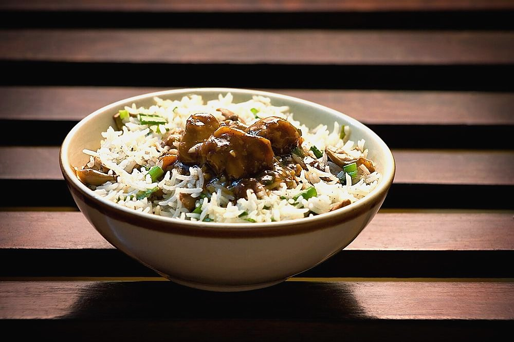

Mutton Pulao Dal
brown-rice mutton pulao served with a smooth toor dal, the Sunday lunch of Parsi homes

Contains: milk
Checked against the ingredient list for milk, egg, fish, crustaceans, tree nuts, peanuts, sesame, mustard, soy and gluten. Nothing else is checked, and brands vary, so read the label on anything you have not bought before.
Ingredients
Quantities for 6.
- 500g, soaked 30 minutes Basmati Rice
- 700g bone-in, cut into 5cm pieces Mutton
- 250g, rinsed Toor Dal
- 4 large, finely sliced Onion
- 2 tbsp Sugarcaramelised, for the brown colour of the rice
- 6 tbsp Ghee
- 2 pieces, 5cm Cinnamon
- 8 Cloves
- 6, bruised Cardamom
- 1 Black Cardamomoptional
- 2 Bay Leaf
- 1 tsp, whole Black Pepper
- 1 tbsp paste Ginger
- 1 tbsp paste Garlic
- 3 medium, chopped Tomatofor the dal
- 1 tsp Turmeric
- 1.5 tsp Chilli Powder
- 1 tsp Cumin Seeds
- 1 tsp Garam Masala
- a large handful Coriander Leavesoptional
- to taste Salt
- 1.6 litres Water
Cookware
stovetop, pressure cooker, blender
Before you start
- Soak the rice 30 minutes and drain it in a colander for 15 more, so the grains are damp but not wet.
- Make the caramel first and have it cool in a cup: 2 tbsp sugar melted in a dry pan to a dark mahogany, killed with 2 tbsp hot water.
- The dal and the pulao cook in parallel. Start the dal first. It can sit while the rice steams.
- Take the mutton out of the fridge 30 minutes ahead.
Method
- For the dal, pressure cook the toor dal with the tomato, turmeric, half the chilli powder, salt and 700ml water for 5 whistles, then blend smooth and keep warm.Blend it properly. Parsi dal is silk, not a textured tadka dal.
- Heat 2 tbsp ghee, crackle the cumin seeds, add 1 sliced onion and fry to deep gold, then pour this over the dal.
- For the pulao, heat 4 tbsp ghee in a heavy pot and fry the remaining sliced onion until dark brown, 20 minutes. Lift out half and reserve for the top.Twenty minutes on medium, not ten on high. Rushed onion is bitter and pale in the same breath.
- Add cinnamon, cloves, cardamom, black cardamom, bay leaves and peppercorns to the pot and fry 1 minute.
- Add the ginger and garlic paste, fry 2 minutes, then add the mutton and brown it 8 minutes.
- Add the rest of the chilli powder, salt and 700ml water. Pressure cook 4 whistles, or simmer covered 60 minutes, until the mutton is tender.
- Strain the meat from the stock. Measure the stock and make it up with water to 900ml. This is what the rice will drink.Getting the liquid right is the difference between separate grains and porridge.
- Bring the stock to a boil with the caramel, the garam masala and salt. It should taste slightly too salty on its own.
- Stir in the drained rice and the mutton, boil hard 4 minutes until craters appear on the surface, then cover tightly and cook on the lowest heat 15 minutes.
- Rest, still covered, for 10 minutes off the heat before opening.Do not lift the lid early. The last of the steam is what finishes the top layer of rice.
- Fork the rice through gently, scatter the reserved brown onion and coriander over, and serve with the hot dal in a bowl alongside.
Storage
Rice and dal both keep 2 days refrigerated, stored separately. Reheat the rice covered with a sprinkle of water; loosen the dal with water and bring it back to a bare simmer.
Nutrition Low estimate
| Per serving429 g | Per 100 g | |
|---|---|---|
| Calories | 772+ kcal | 180+ kcal |
| Protein | 41.3+ g | 10+ g |
| Carbohydrate | 112.5+ g | 26+ g |
| of which sugars | 11.1+ g | 3+ g |
| Fibre | 10.6+ g | 2+ g |
| Fat | 17.2+ g | 4+ g |
| of which saturated | 9.2+ g | 2+ g |
| of which unsaturated | 6.6+ g | 2+ g |
The + means ingredients given to taste rather than by weight are counted as zero, so the true figure is a little higher than shown. A rough guide only. A large part of this ingredient list is given to taste rather than by weight, or much of what is weighed is not eaten. Ingredients given to taste rather than by weight are counted as zero, so the real figure is a little higher than this. The + says so. Some ingredients have no exact match in the nutrient database and use the nearest equivalent: garam masala, mutton. Estimated from raw ingredients using USDA FoodData Central. Cooking changes are not modelled, and added salt is excluded, so sodium is not given.
Written and checked against sources, not cooked in a test kitchen. Times, yields and keeping times are guides, and the allergen and nutrition figures are worked out from the ingredient list rather than measured. Use your own judgement, particularly on doneness and on anything you are storing or reheating. More in About.